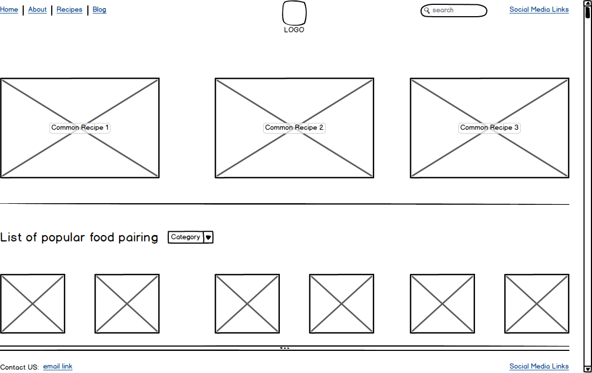

Here is a list of my favorite websites:
This website does not have a lot of white space, but it also has a lot of information for the users. Because of this, the site does not waste any space and begs the user to scroll through its content. When the site opens for the users, it has them focus on the big pictures that immediately appear on top of the home page. The website does not have true balance except for the way it displays content hierarchy. The site has the most important content first, then it shows the users other searched content as they scroll down the page. It also has a header that is frozen as you scroll.
This website has a lot of balance horizontally. It fills the white space with different colors or background pictures, which helps to separate the sections on the website. The site has a header that includes the logo, but it does not seem that it is the focal point. Also the header does not drastically stand out compared to other website content. Additionally, the header has links that navigate the users to different sections within the page so he/she does not have to scroll to navigate.
The two sites are similar in the following ways:
The two sites are different in the following ways:
The homepage for this website will make it easy for the users to navigate. The hierarchy will be from top to bottom. The header will have the most useful information such as the navigation links, logo, search field, and social media links. The user's eyes will be drawn to the larger images, which will display the most common recipes on the sire. The next important thing will be the section about the food pairing that go with the recipes. The user will be able to select a category, which will change the 6 images displaying on the home page. The footer will contain an email link and again the social media links. The grid layout will stay consistent through out the homepage. The white space behind the different sections will make the homepage feel less confined even though it has a good amount of images.
The homepage for this website draws the user to its focal point, which is the image link of its most popular recipe. It then surrounds itself with other smaller image links of food pairings. The food pairing image links can also be updated by choosing specific category from the dropdown above the focal point image. The white space behind the section containing the focal point, gives the users a creative way of seeing lots of content without feeling overwhelmed. A section about me is shown below the the main focal point. This has a grid layout of 2 columns converging into 1 column which contains the important part of the about me section. The user can also use the navigation links in the header to search, navigate to social media, and jump to other related content from the homepage.
If you're interested in my story or want to collaborating with me on a project, click here.